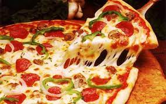

Del Autor [MUCHA SUERTE!! ]
Procedimiento paso a paso
- Empezaremos nuestra pizza casera por la masa. Para ello, coloca la harina mezclada con la pizca de sal sobre la mesa y haz un hueco en el centro para darle forma de corona.
- Coge un bol y vierte el agua junto con el aceite y la levadura. Revuélvelo todo hasta disolver por completo la levadura y vierte la mezcla en el centro de la corona de harina.
- Integra poco a poco los ingredientes hasta obtener una masa homogénea. Amasa durante 7 minutos sobre la mesa, haz una bola con la masa y cúbrela con papel film. Deja que repose durante 20 minutos.
- Pasado el tiempo, estira la masa con la ayuda de un rodillo y pásala a una bandeja de horno previamente enharinada. Ahora es el momento de rellenarla.
- Extiende la salsa de tomate sobre la base de la pizza dejando libre un borde de 1 cm. Luego, distribuye la mozzarella rallada por todas partes y hornea la pizza durante 10 minutos a 170ºC. Retírala y cúbrela con tomates cortados en rodajas.
- Añade sal al gusto, reparte el ajo y el perejil picados. Incorpora las aceitunas y rocia la pizza casera con un hilo de aceite de oliva. Hornéala durante 5 minutos más. Retira la pizza napolitana y sírvela.
VOLVER A INGREDIENTES

Si sale asi avisar!